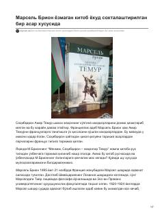

MBMarsel Brion asarlarining o'zbek tilidagi tarjimalaridagi xatoliklar va tarixiy noaniqliklar tahlili.
Ushbu asar fransuz yozuvchisi Marsel Brionning Amir Temur haqidagi kitoblarining o'zbek tilidagi tarjimalarida yo'l qo'yilgan xatolar va soxtalashtirishlarni tahlil qiladi. Muallif asl manbalar va tarjima qilingan nashrlar o'rtasidagi tafovutlarni ilmiy nuqtai nazardan yoritib beradi.